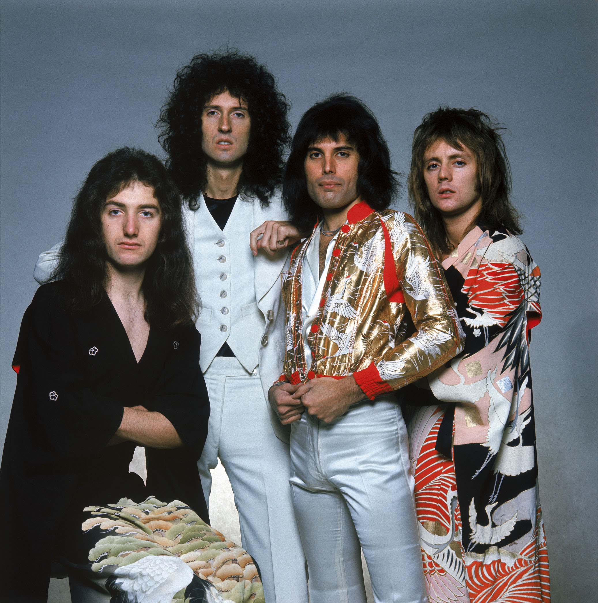
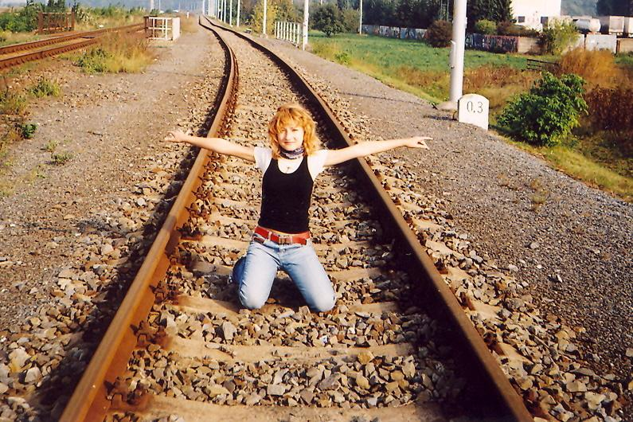
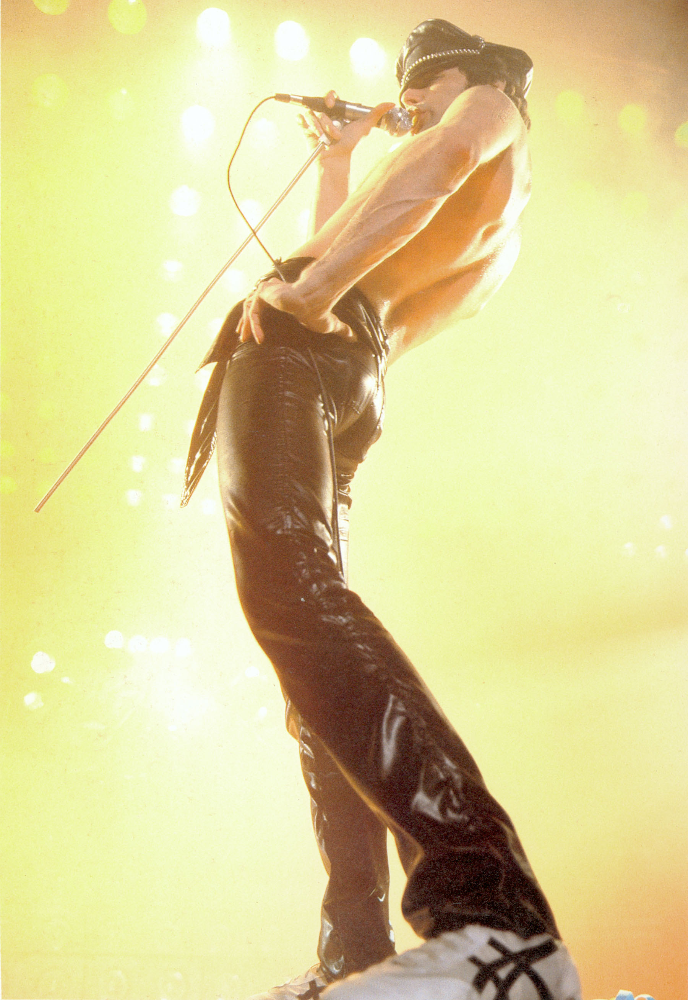

Na celém světě si dnes fanoušci kapely Queen připomínají, že od smrti jejich frontmana Freddie Mercuryho uplynulo přesně 20 let. I mě tato zpráva přinutila ke vzpomínání… ke vzpomínání na to, jak Queeni kdysi vstoupili do života mně a jaké songy mě nejvíc ovlivnily. Přestože už dneska tuhle kapelu skoro neposlouchám a Freddie ani Brian už mi dávno nevisí ve skříni, byly časy, kdy to byl právě Mercuryho hlas, který podbarvoval spoustu okamžiků, na které nikdy nezapomenu.

Nevěřili byste, kolik práce mi dalo vybrat aspoň trochu slušnou fotku :DDD…tuhle jsem kdysi nosívala v peněžence.
Příběh začal velmi nepoeticky v létě roku 2004, kdy jsme si pořídili domácí kino :-)…kolekce nejlepších queeňáckých videoklipů byla jedním z našich úplně prvních DVDček a já zůstala po jejím shlédnutí unešená :-). A myslím, že pak už mě tahle láska neopustila až do maturity. Sháněla jsem alba kde se dalo - od Mitche, Pepy, od strýca…nakonec jsem dostala pod stromeček MP3ku s kompletní diskografií od Terči :-). Queeny mám spojené s obdobím tanečních a následujícím jarem, s prvním burčákem a fotkama na kolejích, s mýma 18tinama, s Queen-párty :D i s několika více či méně náhodnými setkáními… Je to prostě spousta báječných vzpomínek na časy, kdy neexistovaly žádné starosti, potykali jsme si s alkoholem a tím opravdu nejdůležitějším byla hudba, která nám k tomu hrála 8-) …
Těžko se mi tu vybírá těch několik nejsrdcovějších songů, mám ráda spoustu z nich, často i celá alba, ale nemůžu jinak - proto jsem koneckonců chtěla tenhle článek napsat… Kdybych tedy měla prstem ukázat na tu mou jedinou - nejlepší a nejmilejší, byla by to tahle. Vždycky když ji slyším, přesně vím, co jsem cítila, když mi bylo sedmnáct. Že mám před sebou celý život, můžu dokázat cokoliv… a nic mě nezastaví :D!
No copak by tu mohlo tohle chybět :D?? Jestli nějaký song od Queenů skutečně stojí za to, abyste si kvůli němu pořídili domácí kino a ohulili repráky na max, je to Breakthru z mého nejoblíbenějšího alba The Miracle. Navíc se v ní zpívá o nových začátcích a to je prostě můj životní leitmotiv ;)… A abych dokázala hlubokou provázanost Breakthru s mým životem, dokládám ilustrační foto made by Pepa…na promile v krvi se radši neptejte 8-) …

Somehow I have to make this final breakthru…NOW!
Můj nejoblíbenější slaďák od Queenů je Save Me, rozbrečela by i kámen. Má mimořádně dojemný a otevřený text. Je to ta nejcitlivější zpověď člověka, který hluboce miluje… Když jsem odcházela do Brna na výšku, uložila jsem si nejkrásnější úryvek do mobilu jako SMSku. Dneska jsem zjistila, že ho tam pořád ještě mám :-)…
Tenhle song pro mě ztělesňuje jaro 2005. Co já vím, tak se jedná o poslední klip, který Freddie natočil, než se před smrtí definitivně stáhnul ze světel reflektorů, a člověka z něj docela mrazí. Aspoň mě pokaždé, když na konci Freddie šeptá “I still love you”, přeběhne mráz po zádech. Ale ta písnička je nádherná, vychází z ní takový klid a smíření. Ráda při ní koukám na nebe :-)…
These Are The Days Of Our Lives
No a na závěr malá perlička ;)… Už když jsem ji poprvé slyšela, věděla jsem, že mi jednou protě MUSÍ hrát na svatbě. Jsou sny, z kterých nikdy nevyrostu :D…(ikdyž už vím, že k oltáři mě nepovede princ Barin alias Timothy Dalton, na té hudbě pořád trvám :DD…)
Jedno vám na závěr teda musím říct . Když jsem si teď všechny tyhle songy pustila, úplně se mi rozbušilo srdce…ta hudba prostě pořád funguje :-)!! Budu moc ráda, když mi do komentářů napíšete, jaké jsou ty “vaše” srdcovky od Queenů. Určitě taky nějakou máte a neříkejte, že ne ;)!

R.I.P. Freddie…
Stále stejně patetická. :D
Dělo se na jaře 2005 něco speciálního?
Tak já bych se asi na tom žebříčku moc neshodla. Tak zkusím svoji TOP 5:
The Show Must Go On (příp. Innuendo nebo obě)
Headlong
Scandal
Somebody to love
‘39